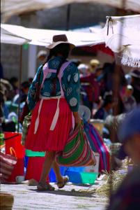

|
Dimanche 23 septembre
Il est 7h00 du mat' et on est déjà dehors en train d'attendre le bus. Encore.
Le bus est en fait un minibus et une dame fort causante s'occupe de trouver
les clients. Son mari, lui, est le chauffeur. Encore une affaire de famille...
Elle essaie d'attraper tous les touristes qui passent, mais tous ont déjà acheté
leur billet dans leur hôtel. Une compagnie de bus en fait apparemment la tournée.
Du coup, leur billet est plus cher (!), tous les touristes sont dans le même
bus, et notre petite dame a bien du mal à remplir le sien... La vie est dure
pour les petits... Elle finit par remplir son car après un tour dans la ville.
Il n'y a que des gens du coin à part nous.
Arrivés à Tarabuco, on ne sait plus où regarder. Il s'agit en fait d'un marché
où tous els gens qui vivent dans la montagne aux alentours se retrouvent. Ils
et elles sont superbes, habillés de leur poncho ou de leur robe traditionnelle.
Et chacun porte sur la tête la coiffe distinctive de son village. Du bonnet
en laine qui, déplié, sert de cagoule au chapeau ressemblant aux casques des
conquistadores espagnols (!) en passant par les chapeaux brillants ou fleuris,
avec un pompom perché au bout d'une tige. Sur la place centrale, il y a essentiellemtn
des vendeurs à pied qui proposent sacs, couvertures et ponchos. Un peu plus
loin, les biens de consommation courante, les fruits, les légumes. Et enfin,
une cour dans laquelle on mange, comme dans tous les marchés boliviens des plats
copieux et bon marché. On se régale.
Mais petit à petit, notre enthousiasme baisse un peu. En fait, on sent que
l'ambiance est un peu étrange, presque hostile. Les vendeurs sont vraiment insistants
avec les touristes et l'un d'eux s'est même fait découper sa poche au cutter.
Mais c'est toujours le même problème. On est là, avec nos chouettes fringues,
nos caméras et nos appareils perfectionnés. Et eux, ils vivent dans la montagne,
on a aperçu leurs maisons en pisé, et ils ne possèdent presque rien. En plus,
ils sont un peu hostiles par rapport aux photos. Soit ils jettent des trucs
pour dire "non", soit ils demandent de l'argent. Même pour photographier des
piments en train de sécher. Mais facile de comprendre pourquoi. Il paraît qu'il
n'y a pas beaucoup de touristes en ce moment, pourtant, nous on trouve qu'on
est déjà nombreux, tous avec nos gros zooms à les prendre en photo. Ce n'est
pas méchant, ils sont tellement beaux habillés comme ça. Mais trop, c'est trop!
On range notre appareil, même si on a déjà pris pas mal de photos. Ce n'est
pas le cas de tout le monde et un gros beauf doit même être retenu par sa femme.
Il est en train de s'énerver parce que, alors qu'il les fixait de son objectif,
un petit groupe lui a jeté un truc... même pas méchamment en plus. C'est leur
façon de dire qu'ils en ont ras-le-bol... ils ne parlent que le quechua.
Lundi 24 septembre
On est ici à 2700 mètres d'altitude. Autant dire qu'on commence à avoir plein
de petits globules rouges partout. Journée pépère à flâner à la découverte de
la belle ville de Sucre. Le climat est sympa, l'architecture belle, l'ambiance
étudiante et la ville plutôt moderne. Bref, il doit être agréable d'y vivre,
du moins quand on a un peu d'argent. Parce que des mendiants, il y en a beaucoup
ici et on voit bien que ce n'est pas pour rire. Des gamins viennent finir les
assiettes de gens dans les restos quand ils partent.Cela dit, Sucre est une
grande ville, c'est même la capitale de la Bolivie (un peu évincée par La Paz
tout de même) et dans toute grande ville où qu'elle soit dans le monde, il y
a des mendiants.
Matin, midi et soir, les cloches des innombrables églises carrilonnent. Il
y a bien une église tous les 300 mètres! A toute heure de la journée, il y a
une messe. Et l'église est toujours pleine. On a même vu des gens suivre la
messe de l'extérieur, et pourtant ce n'était pas une petite église. Ici encore,
la religion est très présente. Hier, dans le bus, tous les gens se sont décoiffés
et ont fait le signe de croix e passant devant une chapelle. Il y en a aussi
qui font le signe de croix en abordant un carrefour! Ils feraient mieux de garder
les mains sur le volant. Bref, on ne sait pas trop où s'arrête la religion et
où commence la superstition.
A midi, on s'est fait un repas bolivien. D'abord, petite assiette de crudités
et du pain. Puis énorme soupe avec des spaghetti dedans. Je me suis demandée
si mon assiette n'était pas plutôt le plat! Après cette petite mise en bouche
qui nous a bien calés, le plat de résistance: de la viande (agneau ou boeuf
au choix) accompagnée de riz. Larges protions, est-il nécessaire de le préciser.
Pour finir (enfin), un fruit, de la mangue. Et pour arroser légèrement le tout,
un jus de... cacahuètes. On est sorti de là allégés de seulement 10 bolivianos
pour deux, soit 11FF.
Ce soir, chuletas! C'est sensé être des côtelettes. En fait, ce sont d'énormes
mais fins morceaux de boeuf cuits au feu de bois. Tellement énormes que ça dépasse
des deux côtés de l'assiette. Et avec ça, des vraies frites, du riz pour alléger
(cuit très très longtemps d'ailleurs et servis avec du fromage de vache artisanal
qui laisse bien bien sentir que c'est de la vache!) et tout de même un peu de
carottes et de betteraves râpés. Bref, on va manger léger. Ici notre hôtel s'appelle
"El Tourista". Pourvu que ce ne soit pas prémonitoire...
Mardi 25 septembre
Le quartier autour du marché est vraiment animé. Le marché en lui-même vaut
le détour, on y vend de tout. Et les étals de fruits et légumes sont un véritable
régal pour les yeux. C'est à celle qui aura celui le plus harmonieux. Les pommes,
les oranges, tout est rangé, aligné, disposé en forme de pyramide. Et puis,
juste à côté, il y a une rue marchande et piétonne. Les boutiques, grandes ouvertes
sur la rue, proposent des fringues à la mode, des CD, tout pour la cuisine...
Et un peu partout s'installent les vendeurs ambulants qui étalent leurs produits
sur des bâches en plastique. Ce soir, en plein milieu, il y avait même une brouette
de pop-corn!!! Le soir il y a tellement de monde qu'il faut adopter le rythme
lent des gens qui flânent pour la traverser. Dans la rue perpendiculaire,plein
de restos proposant des viandes grillées cohabitent avec les stands ambulants
où on peut acheter des pizzas, des hot-dogs, des friandises.
Aujourd'hui, on est monté tout en haut de la ville et ça monte dur! MAis le
panorama en vaut la peine. Et puis on a visité également la fac de droit. Un
superbe bâtiment avec une cour intérieur, un cloître tout autour et une fontaine
au milieu. C'est ici qu'était formée l'élite espagnole à l'époque coloniale.
C'est aussi ici que sont nés les mouvements d'indépendance du pays. Et aujourd'hui
encore, ça a l'air d'être très remuant... On a vu une affiche sur un des murs.
Certains semblent penser qu'une attaque en Afghanistan ferait beaucoup de victimes
innocentes, n'aiderait pas à arranger les relations entre tous ces pays et que
cet argent serait peut-être plus utile pour aider les pays en difficultés...
pas con... aider les gens à sortir de la misère qui rend fanatique plutôt que
d'attiser la haine... à suivre.
Suite du voyage : Potosi
|
Bolivie
Tarabuco
|
Bolivie
Tarabuco
|
Bolivie
Tarabuco
|
Bolivie
Tarabuco
|
Bolivie
Tarabuco
|

Bolivie
Tarabuco
|
Bolivie
Tarabuco
|
|
|